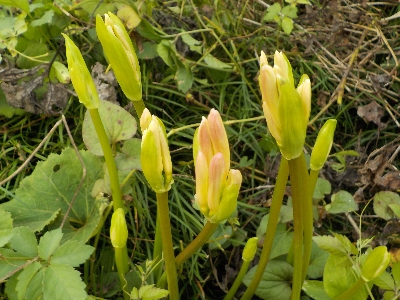
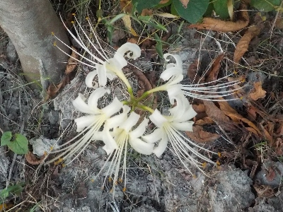
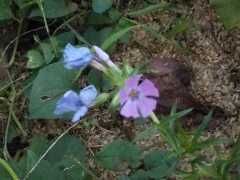

遊びで植物を育てよう
2024/09/28
彼岸花がまたにょっきっと出てきました。

先日彼岸花は咲きましたが、新たにまだつぼみが沢山出てきました。
日陰に生えていたものが前に花が咲いて、今回は日向のものが出てきたようです。
温暖化らしく、遅く咲くようです。
【9月TOP】
【日記TOP】
【園芸TOP】
2024/09/16
彼岸はちょっと先ですが彼岸花が咲きました。

先日つぼみだったのが咲きました。
彼岸までは持たないだろうな。温暖化なんだから開花が遅くなってもいい気がするんだけどな。
【9月TOP】
【日記TOP】
【園芸TOP】
2024/09/12
彼岸花の芽が出てました。

もう彼岸花が出る時期なんだ。
はやく秋らしく涼しくなって欲しい。
【9月TOP】
【日記TOP】
【園芸TOP】
2024/09/07
百日草にオオスカシバがいました。

蜜を吸ってます。成虫が飛んでいるぶんには可愛い虫です。
お腹がいっぱいになったらクチナシに卵を産みに行くんだろうな。
クチナシが食べられないように消毒しよう。
【9月TOP】
【日記TOP】
【園芸TOP】
2024/09/01
シバザクラが狂い咲きしてます。

咲いているのはこれだけです。もっと沢山狂い咲きすればいいのにと思ってます。
四季咲きのものがあればいいのに。
【9月TOP】
【日記TOP】
【園芸TOP】
過去の日記
【2024年9月の日記】
【2023年9月の日記】
【2022年9月の日記】
【2021年9月の日記】
【2020年9月の日記】
【2019年9月の日記】
【2018年9月の日記】
【2017年9月の日記】
【2016年9月の日記】
【2015年9月の日記】
【2014年9月の日記】
【2013年9月の日記】
【2012年9月の日記】
【9月TOP】
【日記TOP】
【園芸TOP】
台風の季節です。
【おいしいものを食べよう。】【しっかり寝よう。】
【ソロ活をしよう!】【季節感のあることをしよう。】【動画視聴はほどほどに。】【当サイトの全てのコンテンツは無断転載禁止です。】